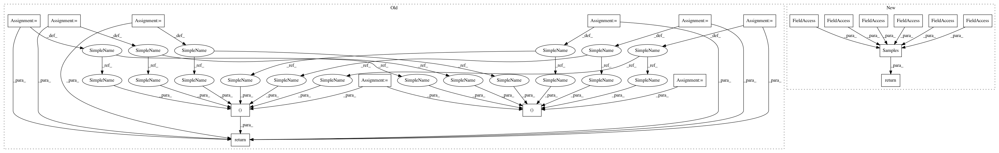

4427e66372ade50d4bc36a7cfe93bbdbf71234cc,ml/rl/test/gridworld/gridworld_continuous.py,GridworldContinuous,generate_samples,#GridworldContinuous#Any#Any#Any#,41
Before Change
List[List[Dict[int, float]]],
List[Dict[int, float]],
]:
states, actions, propensities, rewards, next_states, next_actions, is_terminals, possible_next_actions, reward_timelines = self.generate_samples_discrete(
num_transitions, epsilon, with_possible
)
continuous_actions = [self.action_to_features(a) for a in actions]
continuous_next_actions = [
self.action_to_features(a) if a is not "" else {} for a in next_actions
]
continuous_possible_next_actions = []
for possible_next_action in possible_next_actions:
continuous_possible_next_actions.append(
[
self.action_to_features(a) if a is not None else {}
for a in possible_next_action
]
)
return (
states,
continuous_actions,
propensities,
rewards,
next_states,
continuous_next_actions,
is_terminals,
continuous_possible_next_actions,
reward_timelines,
)
def preprocess_samples(
self,
states: List[Dict[int, float]],
After Change
]
)
return Samples(
states=samples.states,
actions=continuous_actions,
propensities=samples.propensities,
rewards=samples.rewards,
next_states=samples.next_states,
next_actions=continuous_next_actions,
is_terminal=samples.is_terminal,
possible_next_actions=continuous_possible_next_actions,
reward_timelines=samples.reward_timelines,
)
def preprocess_samples(
self, samples: Samples, minibatch_size: int
) -> List[TrainingDataPage]:
In pattern: SUPERPATTERN
Frequency: 3
Non-data size: 19
Instances
Project Name: facebookresearch/Horizon
Commit Name: 4427e66372ade50d4bc36a7cfe93bbdbf71234cc
Time: 2018-06-21
Author: sophiajxw@fb.com
File Name: ml/rl/test/gridworld/gridworld_continuous.py
Class Name: GridworldContinuous
Method Name: generate_samples
Project Name: facebookresearch/Horizon
Commit Name: 4427e66372ade50d4bc36a7cfe93bbdbf71234cc
Time: 2018-06-21
Author: sophiajxw@fb.com
File Name: ml/rl/test/gridworld/gridworld_enum.py
Class Name: GridworldEnum
Method Name: generate_samples
Project Name: facebookresearch/Horizon
Commit Name: 4427e66372ade50d4bc36a7cfe93bbdbf71234cc
Time: 2018-06-21
Author: sophiajxw@fb.com
File Name: ml/rl/test/gridworld/gridworld_continuous.py
Class Name: GridworldContinuous
Method Name: generate_samples
Project Name: facebookresearch/Horizon
Commit Name: 4427e66372ade50d4bc36a7cfe93bbdbf71234cc
Time: 2018-06-21
Author: sophiajxw@fb.com
File Name: ml/rl/test/gridworld/gridworld_continuous_enum.py
Class Name: GridworldContinuousEnum
Method Name: generate_samples